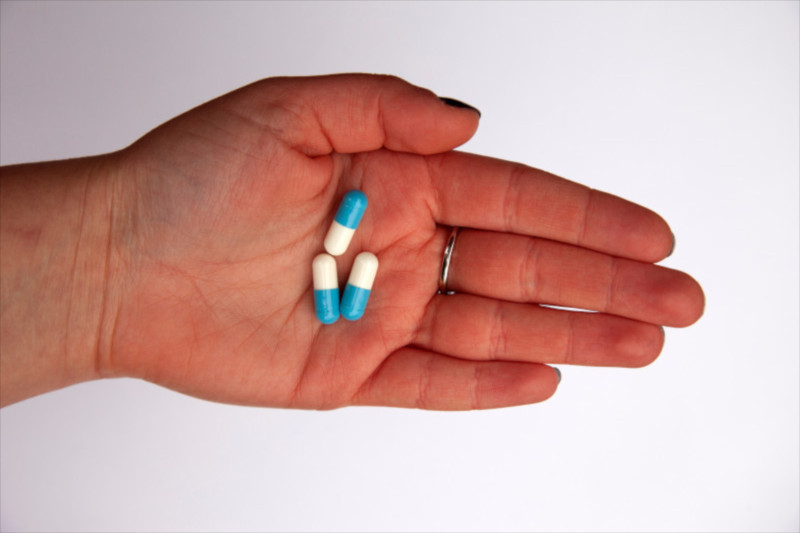

Чарівна пігулка: що варто знати про застосування антибіотиків?
Ситуація особливо гостра, коли треба "тут і зараз" і часу на антибіотикограму немає – для таких випадків іноді застосовують відразу суміш антибіотиків, бо ціна може вимірюватися людськими життями... Буває так, що хірурги проводять багатогодинні круті операції, виконуючи воістину високоточну ювелірну роботу, вітають рідних із успішним її завершенням, а потім приходять післяопераційні ускладнення. І нерідко це якийсь непримітний стафілокок, який став на хибний шлях і здобув гени множинної антибіотикостійкості. І нерідко це закінчується смертю пацієнтів. За даними CDC, у США щороку щонайменше 2 мільйони людей отримують антибіотикостійкі інфекції та щонайменше 23 тисячі з них при цьому помирає.
А десь поруч, ось прямо зараз – хтось із нас захворів на грз і вирішив пошвидше одужати та полікуватися антибіотиками. Формально ми не маємо відношення до тих 23 тисяч, але всіх учасників недбалого застосування антибіотиків можна справедливо внести у список спільників вбивства цих людей.
Чому ми стаємо спільниками?
Еволюція бактерій рухається із неймовірною швидкістю – часовий проміжок між поколіннями у нашого виду вимірюється десятками років, а в бактерій це десятки хвилин.
Набуття і поширення нових ознак відбувається дуже швидко, цьому сприяє також здатність до горизонтального переносу генів, і мікроби не гребують ділитися генами антибіотикостійкості із представниками інших видів. Та навіть формально живий власник цих генів потрібен далеко не завжди – гени дохлих бактерій теж можуть передаватися.
Отож коли ви наїлися антибіотиків, і таким чином населекціонували в носі якихось антибіотикорезистентних стафілококів, варіантів сценарію може бути чималенько. Ви можете піти провідати родича в лікарні після операції і власноруч йому принести гостинчик, гаряче потиснувши руку. А можете вишморгати ніс і ваш стафілокок помандрує в стічні води, де познайомиться з іншими стафілококами, господарі яких лікувалися іншими антибіотиками. У процесі дружнього спілкування бактерії люб'язно обміняються генами стійкості до інших антибіотиків, ймовірно також отримають досвід спілкування із миючими та дезінфікуючими засобами, що присутні там у розведеній кількості – це, так би мовити, гормезис у чистому вигляді! От тільки не для нас цього разу. Це все зробить бактерії ще стійкішими і, так би сказати, жорстокішими.
А далі – наприклад, пляж чи грунт, на якому будуть вирощені овочі, або ж чиїсь кактуси в горщиках. І рано чи пізно за умов масового застосування антибіотиків – із їжею, квітами, на руках, волоссі чи мобільних телефонах антибіотикорезистентні вбивці проникають у лікарняні палати та за двері пологових будинків...
Справедливо сказати, що процес антибіотикостійкості також інтенсивно може розвиватися і в самих лікарняних закладах, де частота застосування антибіотиків значно вища. Однак сьогодні захворіти на антибіотикорезистентну інфекцію можна далеко не лише, лежачи на лікарняному ліжку – антибіотикорезистентні штами виділяють із басейнів, стічних вод, та морської риби.
А як же я?
Іронія в тому, що у більшості випадків нам таки не потрібні ті антибіотики, та навіть більше – вони можуть нам наробити біди. Чому та як саме?
По-перше, антибіотики не є ефективними при так званих простудах . Бо переважно вони спричинені вірусами, а не бактеріями. Усі антибіотики націлені на мішені, які існують в бактеріальній клітині – чи то синтез клітинної стінки (пеніциліни), білків (тетрацикліни), ДНК (рифампіцин), а у вірусів навіть і клітини своєї немає... Для антибіотиків віруси – так би мовити, свого роду невидимки. Кишкові розлади теж можуть мати не завжди бактеріальну причину, окрім того, антибіотик то далеко не перший засіб, який варто використовувати при харчовому отруєнні. А якщо справи кепські, то зволікання на таке самолікування може бути небезпечним. Те саме стосується інфекцій сечостатевих шляхів – різні збудники вимагають застосування різних антибіотиків. По-друге, антибіотики добряче руйнують нашу власну мікробіоту . І це не лише питання кишкових негараздів, але й погіршення бар'єрної функції біоплівки. На нашому горлі живе наша власна мікробіота. Коли горло болить, бо маємо вірус, а ми ще й додаємо антибіотик, то нашим бактеріям значно важче стримувати натиск чужих бактерій, бажаючих поселитися на звільнених територіях. Таким чином, ймовірність отримати вторинну бактеріальну інфекцію навіть зростає. По-третє, місце загиблих бактерій можуть займати не лише новоприбулі чужі бактерії, але й всілякі гриби, на які антибіотики також не діють. Тому зростання виникнення ймовірності мікозів – неодмінний атрибут безконтрольного споживання антибіотиків. (І не треба тут звинувачувати дріжджі в хлібові).
По-четверте, потрібно все ж пам'ятати, що початково, антибіотики – то така собі отрута , яку навчилися синтезувати деякі мікроскопічні гриби та бактерії для боротьби з конкурентами у своєму мікросвіті (примітка: існує складна система класифікації антибіотиків за хімічною структурою, механізмами дії та походженням, сьогодні є і чимало синтетичних антибіотиків). Тому деякі антибіотики можуть мати чимало побічних дій.
По-п'яте, самовільне застосування антибіотиків вносить хаос в подальшу діагностику захворювання. Ніхто не знатиме, як точно трактувати потім вашу антибіотикограму, якщо до такого дійде справа.
Якщо антибіотики все ж потрібні?
Це має визначати лише ваш лікар. Ніколи не тисніть на свого лікаря і не вимагайте призначення антибіотиків!
- Окрім самовільного вживання таблеток, утримайтеся також і від застосування зовнішніх засобів, що містять антибіотики – антибактеріальних мазей, гелів, тощо;
- Однак і не відмовляйтеся від призначення антибіотиків, якщо це рекомендує Ваш лікар;
- Обов'язково закінчуйте весь рекомендований курс антибіотикотерапії навіть, якщо вам полегшало на початку лікування. Недолікована інфекція може бути джерелом повторних антибіотикостійких інфекцій;
- Не пропускайте прийоми ліків та дотримуйтеся рекомендованих часових проміжків – це також запобігатиме виникненню антибіотикостійких мутантів;
- Не обмінюйтеся антибіотиками з іншими людьми – у кожному конкретному випадку має бути призначено та застосовано препарат, що буде найвдалішим для кожного пацієнта;
- Слідкуйте за умовами зберігання та терміном придатності препаратів.

Photo by Mark Fletcher-Brown on Unsplash